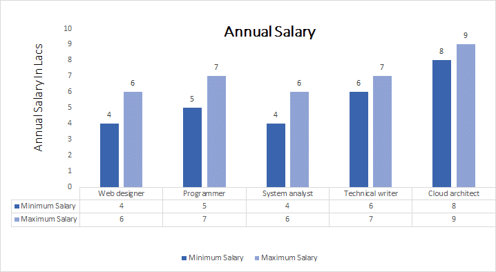

<div class="body-1">
    <div class="main-body">
        <!-- <div class="title-main">
            <h3>
                Why Diploma?
            </h3>
        </div> -->

        <br>
        <div class="main-body-wrap">
            <div class="sub-div sub-div-size2">
                <h3>What a Polytechnic Diploma is ? </h3>
                <hr class="style-three">
                <span class="sub-desc">
                    After completing 10th, students usually rush for higher secondary  courses , 
                    most of the times without any proper direction. After completing 12th, a few of 
                    them get admitted into Govt  Medical/Engineering colleges , following a meticulous 
                    preparation and selection process. Many of them who fail to  book a seat through this 
                    process, opt for private sector colleges , spending a huge amount of money. But, on a 
                    good note, there is a different way out for the engineering aspirant students. They could 
                    deliberately think of joining a Polytechnic course. Basically , a polytechnic course is 
                    designed to make the student well versed with the basic technical concepts.  
                    Immediately after completion of 10th standard, if a student attains a polytechnic diploma 
                    ( a 3 years course), he/she  could straightaway apply for jobs in the same field; often in 
                    the government or private sectors.  After completing Diploma, a student can further opt for 
                    degree courses (BE/B.Tech) through lateral entries in the Engineering colleges, and  directly 
                    enroll into the 2nd year of the degree course. Many students even opt for jobs immediately 
                    after their polytechnic diploma  gets over, and  prefer to pursue their degree course while 
                    working. 
                    <br>
                    Following are some of the important benefits  of a  polytechnic diploma course -
                   <ol>
                    <li> If the financial condition of  your family demands you  to start earning/working 
                        immediately after the 3-years diploma course, then you can very well uphold yourself 
                        in the working field. Now, if you wish to continue your further study along with your 
                        work simultaneously, then you can enroll in AMIE like courses, which offers an engineering 
                        degree course with a very reasonable fee and at your convenience.</li>
                        <li> In case you decide to go ahead with a regular degree course, you could simply enroll 
                            for a regular degree through lateral entry, into the 2nd year directly. As per AICTE 
                            norms, all Engineering college offers 10% of their annual intake for lateral candidates. 
                            The total duration of  completing a regular Degree course is (3 years in Diploma + 3 years 
                            in Degree ), totaling 6 years, which is exactly the same to 6 years through the usual way  
                            of 2 years of schooling after 10th, and 4 years of Engineering Degree.</li> 
                            <li> The cost of pursuing a 3-years Polytechnic diploma is quite  less than that of  other 
                                equivalent regular education. A student from economically poor  background can also 
                                afford the course.</li>
                                <li> Since in the polytechnic diploma course, more importance is given to 
                                    practical  knowledge, it is often recognized that the technical knowledge of a 
                                    polytechnic student’s is much  better in comparison to a student who opts for 
                                    engineering degree  after 12th class.</li> 
                                    <li> The courses at polytechnic help you to start a career of your own, either 
                                        through a job at (Govt / well-reputed company) or by starting your own business.</li>
                </ol>
                            </span>
            </div>

            <div class="sub-div sub-div-size2">
                <h3>Diploma in Computer Engineering :</h3>
                <hr class="style-three">
                <span class="sub-desc">
                    Diploma in Computer Engineering course covers the core concepts of computer science that 
                    includes the subjects such as computer application, at least 6-7 nos of programming 
                    languages, networking, operation system, database, artificial intelligence , 
                    cryptography mobile computing etc apart from the basic science and humanities subjects. 
                    It also covers a lot of interdisciplinary subjects especially from Electrical and 
                    Electronics Engg.  <br>
                    These are the basics for implementation and deployment levels where the computer engineering 
                    field requires candidates to be more productive and deployable.<br><br>
                    <b>Eligibility</b> : The candidate must pass the H.S.L.C. or its equivalent examination 
                    in a single sitting (without grace marks in Science and Mathematics) with Mathematics and Science as compulsory subject with – 
                    <ul>
                    <li> 40% marks (in Average) in Mathematics and Science for General candidates. </li>
                    <li> 35% marks (in Average) in Mathematics and Science for SC candidates. </li>
                    <li> 33% marks (in Average) in Mathematics and Science for ST Candidates.</li>
                </ul> 
                <br>
                    <b>Admission process</b> : Through PAT (Polytechnic Admission Test) conducted by Directorate 
                    of Technical Education ,Assam , in every year usually in the month of May. The Process of 
                    admission starts with an advertisement published in almost all leading news papers in Assam 
                    usually in the month of March in every year.<br>
                    <br><b>Career scope / prospect</b> : On successful completion of Diploma in Computer Engineering,
                     a candidate is equally eligible for taking up either a higher degree (BE/BTech/AMIE) or 
                     will be able to work in different career fields  in Govt/Public/Private sectors. 
                     Some companies even prefer to recruit diploma engineers rather than graduate engineers  
                     because of their technical skill. These sectors may include Information Technology, 
                     Software Industry,  Telecommunication companies, Multinational organizations , 
                     Financial companies, Network fields,  Academic Institutes, Aerospace sector, Defence sector,
                      Healthcare companies, Manufacturing companies, Testing companies, Development areas, 
                      Maintenance etc. Opportunities available in government organizations are: Educational 
                      Institutions, Indian railway, DRDO, BHEL, Airport Authority of India, Power grid, ASEB etc. 
                      Also, there are  excellent career opportunities and demand in the gulf countries for Diploma 
                      engineers.<br><br>
                    <b>Job Profile</b> :Major Job Profiles include web designer, programmer, technical writer, 
                    networking expert, mobile computing expert, system analyst, software engineer, operations 
                    executive, cloud architect and SaaS architect, system administrator, mobile application 
                    developer, network administrator, etc<br>
                                </span>
            </div>
            <div class="sub-div sub-div-size2">
                <h3>Diploma in Computer Engineering: Syllabus and Course Description</h3>
                <hr class="style-three">
                <div class="table-responsive x">
                    <table class="table">

                        <tbody>
                            <tr>
                                <th scope="col">Semester I</th>
                                <th scope="col">Semester II</th>

                            </tr>
                            <tr>
                                <td>Communication in English - I</td>
                                <td>Communication in English - II</td>
                            </tr>
                            <tr>
                                <td>Mathematics-I</td>
                                <td>Mathematics-II</td>
                            </tr>
                            <tr>
                                <td>Chemistry-I (T, P)</td>
                                <td>Chemistry-II (T, P)</td>
                            </tr>
                            <tr>
                                <td>Applied Physics-I (T, P)</td>
                                <td>Applied Physics-II (T, P)</td>
                            </tr>
                            <tr>
                                <td>Engineering Drawing</td>
                                <td>Engineering Mechanics (T, P)</td>
                            </tr>
                            <tr>
                                <td>Basic Workshop Practice-I</td>
                                <td>Basic Workshop Practice-II</td>
                            </tr>

                        </tbody>

                        <tbody>
                            <tr>
                                <th scope="col">Semester III</th>
                                <th scope="col">Semester IV</th>

                            </tr>
                            <tr>
                                <td>Computer Application and Programming (T, P)</td>
                                <td>Computer Hardware & Networking (T, P)</td>
                            </tr>
                            <tr>
                                <td>Engineering Economics and Accountancy</td>
                                <td>Microprocessor & Interfacing (T,P)</td>
                            </tr>
                            <tr>
                                <td>Elements of Electrical Engg. (T,P)</td>
                                <td>System Programming</td>
                            </tr>
                            <tr>
                                <td>Computer Architecture and Organizations</td>
                                <td>Advanced C & C++(T,P)</td>
                            </tr>
                            <tr>
                                <td>Elements of Multimedia (T,P)</td>
                                <td>Data Structure (T,P)</td>
                            </tr>
                            <tr>
                                <td>Mathematics -III</td>
                                <td>Digital Electronics (T,P) </td>
                            </tr>

                        </tbody>

                        <tbody>
                            <tr>
                                <th scope="col">Semester V</th>
                                <th scope="col">Semester VI</th>

                            </tr>
                            <tr>
                                <td>DBMS (T,P)</td>
                                <td>Industrial Management & Entrepreneurship </td>
                            </tr>
                            <tr>
                                <td>Java Programming (T,P)</td>
                                <td>Cryptography & Network security (T,P)</td>
                            </tr>
                            <tr>
                                <td>Internet &Web Technology (T,P)</td>
                                <td>Mobile Computing (T,P)</td>
                            </tr>
                            <tr>
                                <td>Computer Communication & Network</td>
                                <td>Artificial Intelligence</td>
                            </tr>
                            <tr>
                                <td>Operating System (T,P)</td>
                                <td>Software Engineering</td>
                            </tr>
                            <tr>
                                <td>Visual Programming (T,P)</td>
                                <td>Project</td>
                            </tr>

                        </tbody>
                    </table>
                </div>
            </div>
            <div class="sub-div sub-div-size2">
                <h3>Diploma in Computer Engineering :</h3>
                <hr class="style-three">
                
                <div class="table-responsive sTab cTab">
                    <table class="table">
                        <thead>
                            <tr>
                                <th scope="col">Sl.</th>
                                <th scope="col">Job Profile</th>
                                <th scope="col">Job Description</th>
                                <th scope="col">Salary</th>
                            </tr>
                        </thead>
                        <tbody>
                            <tr>
                                <td scope="row">1</td>
                                <td>Web designer</td>
                                <td>One who designs the websites and develop them in more efficient way to the user</td>
                                <td>4 to 6 Lacs</td>
                            </tr>
                            <tr>
                                <td scope="row">2</td>
                                <td>Programmer</td>
                                <td>The person who is well versed in different programming language and effectively code for software</td>
                                <td>5 to 7 Lacs</td>
                            </tr>
                            <tr>
                                <td scope="row">3</td>
                                <td>System analyst</td>
                                <td>The person who is responsible for finding and fixing the bugs or defects in the component like hardware or any software</td>
                                <td>4 to 6 Lacs</td>
                            </tr>
                            <tr>
                                <td scope="row">4</td>
                                <td>Technical writer</td>
                                <td>Who is more interested in all technical stuff and gadgets</td>
                                <td>6 to 7 Lacs</td>
                            </tr>
                            <tr>
                                <td scope="row">5</td>
                                <td>Cloud architect</td>
                                <td>The one who is well versed in cloud technology and responsible for building a cloud setup for an organization</td>
                                <td>8 to 9 Lacs</td>
                            </tr>

                        </tbody>
                    </table>
                </div>
            </div>
            <div class="sub-div sub-div-size2">
                <h3>Conclusion:</h3>
                <hr class="style-three">
                <span class="sub-desc">
                    Due to financial problem or any other family problem, if you can’t afford to continue your regular study , or you are bound by your situation to earn livelihood at early phase of your life, then choosing polytechnic diploma is one of the best options. Once completed diploma from polytechnic, you have the opportunity to either earn to support your family or to learn through lateral entry for further growth of your engineering career. Since from the  professional or promotional point of view, the career growth of a diploma engineer is less than that of a graduate engineer, it is always advisable to pursue BE/BTech/AMIE or any other professional certifications like ACA/CompTIA A+/CISSP/CCNP/CCNA/MCSE/Network+/Red Hat certification/ ORACLE certification etc, to enhance your professional skill.  This sort of highly sought certification will be a great help to put you in your desired position.     
                    <br><br>
                    <p style="float: left;">
                    (Source : Official website of DTE Assam, Internet)
                </p>
                <p style="float: right;">
                    Prepared by-<br>
                    Kangka Chakravarty.
                </p>       
                </span>

            </div>

        </div>
    </div>
</div>